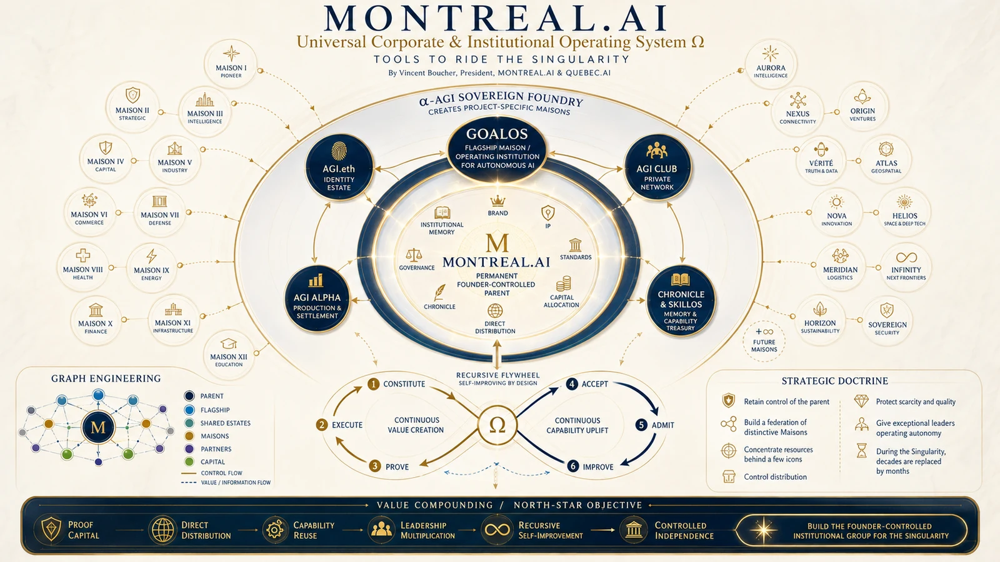

Public demonstrations · Proof before power
GoalOS Proof
Theatres.
A curated public estate where proof, authority, validation, rollback, settlement, governed memory and successor testing become inspectable—without granting the demonstration automatic institutional authority.
Demonstration boundary. These theatres present mechanisms, reference architectures and simulations. They are not customer acceptance records, field validation, realized economics, production authorization or proof of general recursive self-improvement.

The public demonstration estate
Not another video gallery.
An inspectable curriculum of authority.
Each theatre isolates a different institutional law: proof before payment, authority before action, Chronicle before reuse and fresh transfer before improvement.
01 · Recursive evaluationPUBLIC BROWSER DEMO
GoalOS Three-Generation RSI Demo
Three generations, equal constraints, fresh-task transfer and independent in-browser replays. A successor must earn the right to be called better.
Claim boundaryReference mechanism; not proof of general recursive self-improvement.
Open demonstration →02 · Proof-to-authority lifecyclePUBLIC STANDALONE DEMO
Autonomous Protocol Theatre
Inspectable simulation of Mission Contract, Proof Debt, AGI Jobs, ProofBundles, Evidence Docket, validation, Chronicle, Merkle commitment, settlement, rollback and Mission 2.
Claim boundaryNo wallet, live funds, fabricated Mainnet state or claim of external validation.
Open demonstration →03 · Sovereign formationPUBLIC DEMONSTRATION
α AGI Ascension — Nova Seed Theatre
Maps a high-consequence opportunity, cryptoseals it into an ERC-721 Nova Seed, risk-prices it through α AGI MARK and develops it through bounded work, evidence, Chronicle, Mission 2 and governed reinvestment.
Claim boundaryDemonstrates a formation sequence; does not establish a funded external project or accepted outcome.
Open demonstration →04 · Partner institutionPUBLIC DEMONSTRATION
Partner MasterClass — Grand Convergence
Interactive institution for proof-gated AI, AGI Nodes, Chronicle, Validated Skills, Merkle memory and governed RSI around one consequential objective.
Claim boundaryInteractive formation and reference mechanics; not a customer acceptance record.
Open demonstration →05 · Boardroom institutionPUBLIC DEMONSTRATION
Partner MasterClass — Magnum Opus Edition
Boardroom theatre, dynamic AI council, governed RSI, proof missions, cryptographic verification and Mission 2 transfer inside a partner operating institution.
Claim boundaryBoardroom demonstration; no delegated institutional authority or external result is claimed.
Open demonstration →06 · Partner institutionPUBLIC DEMONSTRATION
Partner MasterClass — Grand Institutional Edition
Sovereign-signature partner institution combining executive theatre, mission design, AI deliberation, governed recursive improvement, cryptographic verification, stress testing, diligence and partnership formation.
Claim boundaryPublic partner theatre; no transaction, appointment or acceptance is created.
Open demonstration →07 · Executive authorityPUBLIC EXECUTIVE DEMO
GoalOS Partner Authority Room
A three-minute executive demonstration of the transition from abundant AI capability to institutional permission to rely on autonomous work.
Claim boundaryDemonstration only; no reliance authorization is granted.
Open demonstration →08 · Global validation networkPUBLIC NETWORK DEMO
GoalOS Atlas — Grand Unified Proof Institution
Makes AGI Nodes first-class participants in globally validating AI work before it can be paid, trusted, challenged or reused.
Claim boundaryPublic network demonstration; title language does not establish live production or independent field validation.
Open demonstration →09 · Planetary proof fabricPUBLIC ARCHITECTURE DEMO
GoalOS Atlas — Type I Planetary Proof Fabric
Keeps raw intelligence and evidence local, authorizes work inside replicated cells and propagates compact proof commitments through regional, zone and planetary roots.
Claim boundaryType I design architecture; not evidence of civilization-scale deployment.
Open demonstration →10 · Breakthrough proofPUBLIC GUIDED DEMO
GoalOS Global Breakthrough Proof Foundry
Tests an AI cost-saving discovery across independent global AGI Nodes, conditions payment on proof and preserves only the method that survives replay, policy, challenge and Chronicle.
Claim boundaryGuided demonstration; no realized saving or accepted external breakthrough is claimed.
Open demonstration →11 · Verified improvementPUBLIC STANDALONE DEMO
GoalOS Verified Improvement Flywheel
Reduces modeled AI operating cost without sacrificing quality, rejects unsafe shortcuts, preserves a verified method as reusable capability and reinvests verified value into a harder mission.
Claim boundaryDemonstration and simulated settlement; no realized organizational saving is claimed.
Open demonstration →One architecture across scales
Local proof.
Civilization-wide memory.
GoalOS keeps raw intelligence and evidence local, authorizes work inside bounded cells and propagates compact proof commitments through regional, zone and planetary roots. The global root is lineage and interoperability—not a single critical path for every mission.
Local cell
Execute and preserve sensitive evidence within a bounded authority envelope.
Independent replay
Challenge the claim through fresh context, policy and conflict separation.
Compact commitment
Propagate proofs, roots and revocation state rather than raw private intelligence.
Planetary lineage
Preserve asynchronous interoperability while local cells continue during partitions.
The governing law
AI creates candidates.
Institutions decide what may matter.
Nodes perform work. Edges carry declared meaning. Validators challenge. Authorities permit. Evidence records reality. Chronicle governs memory. Capital expands the frontier of the possible.

The external standard
Real sponsor. Real mission. Real Evidence Docket.
Theatres can demonstrate mechanics. Sovereign Genesis 001 must earn the category through an unrelated paying institution, independent challenge, accountable acceptance, a rights decision and a stronger fresh successor.